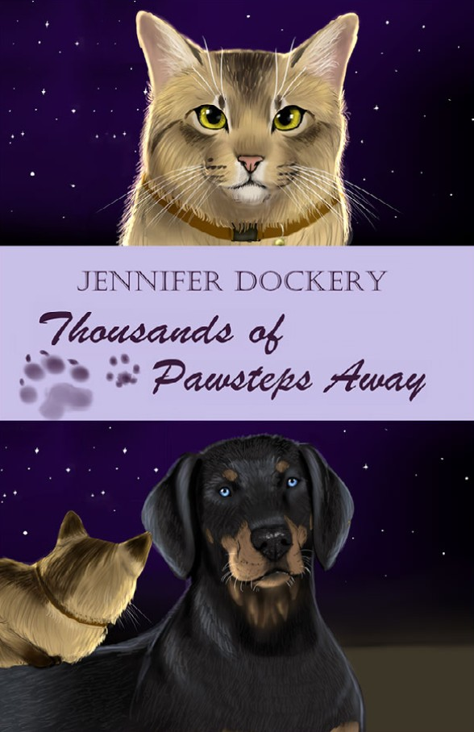

Welcome to my portfolio. I hold two degrees: a Bachelor's degree in Software Development and a Master's degree in Creative Writing. I illustrate and design visual art, from book covers to various art pieces that are illustrated with Paint Tool SAI. This portfolio is made to display my skills: programming, art, and writing.

For my first degree, my bachelor's in Software Development, I have a computer science background. This website was coded by me, as a matter of fact, with HTML/CSS/JS!
With more novels and novellas in the works, I worked on Thousands of Pawsteps Away (pictured on the left) as my graduate school capstone, a story featuring an optimistic tripod cat, Butterscotch, and her search for her missing owner, Mitch. It also features the adventures she has with the resident junkyard dog, Josh, a Doberman with a significantly less optimistic worldview. The illustration I have designed for this story is pictured below.
As an aspiring creative, I hope to be considered for your position to further my creativity in writing and programming. Thank you for your time and for viewing my portfolio.